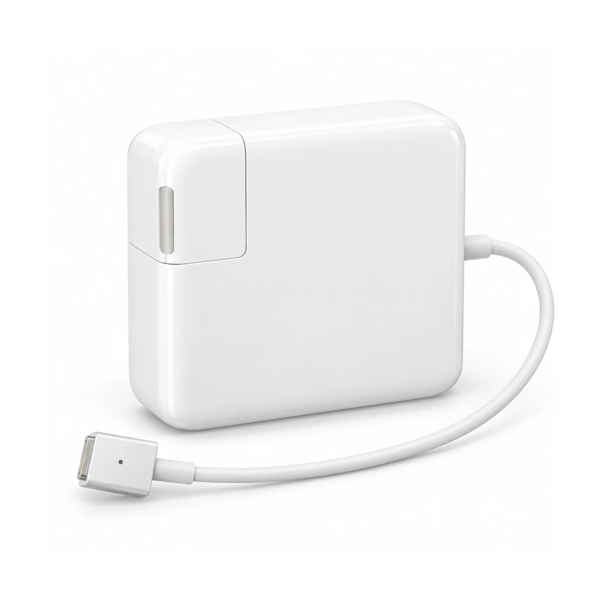
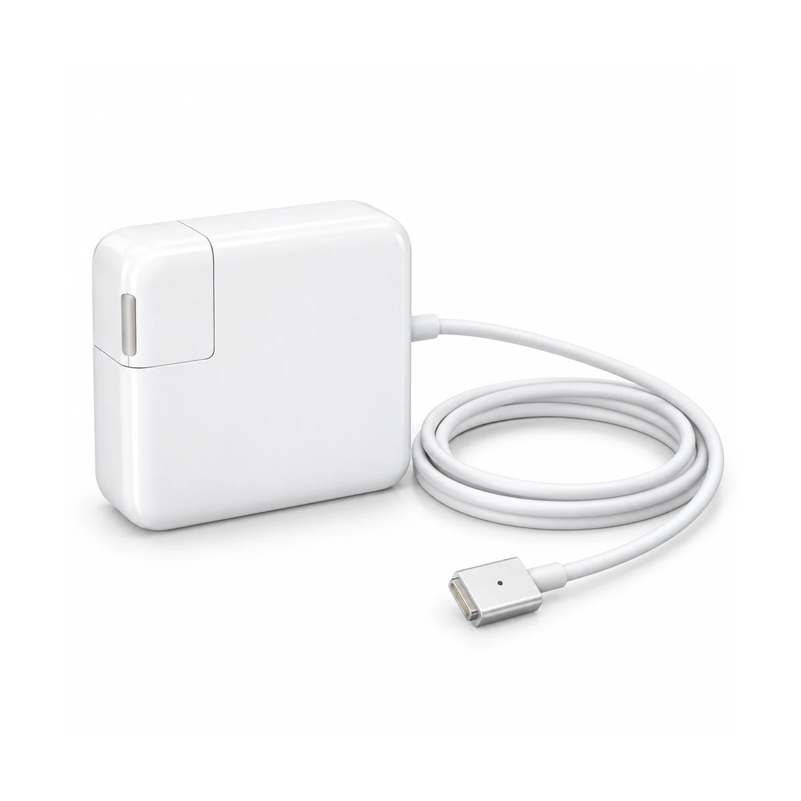
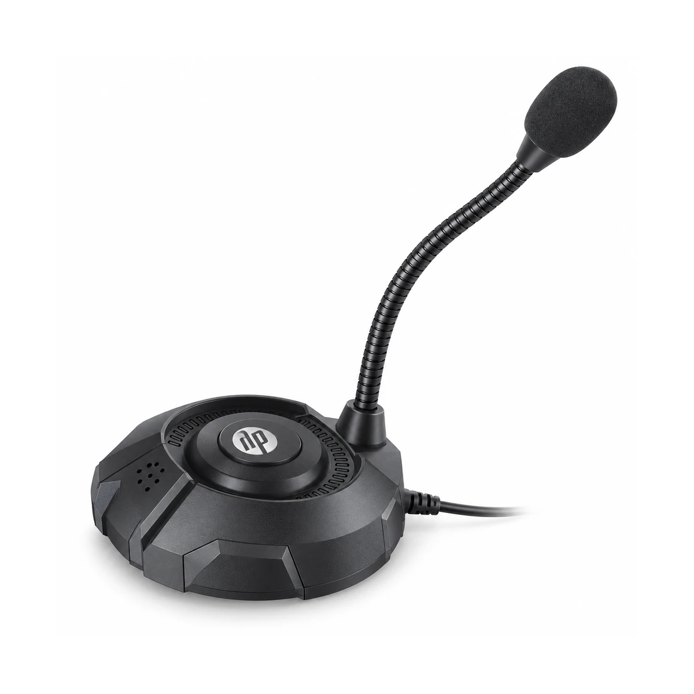
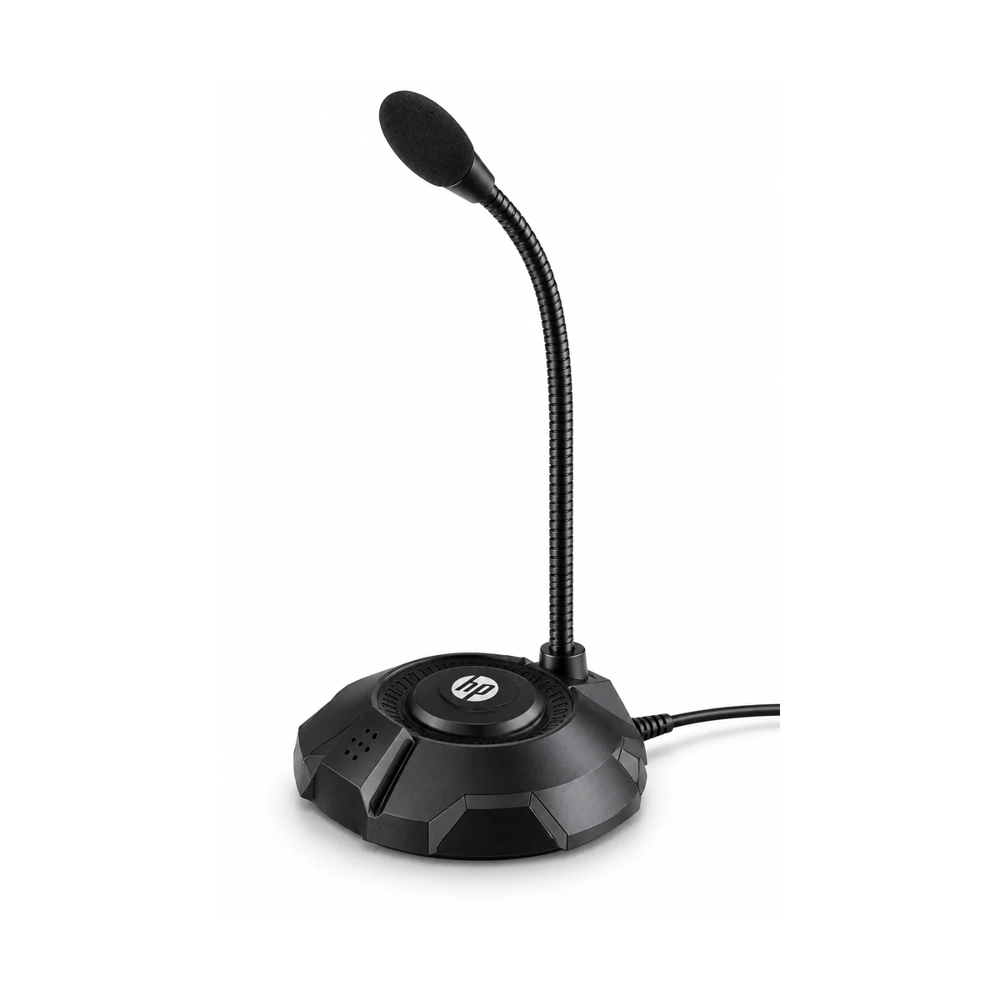

Propuestas NO APROBADAS. No sustituyen imágenes públicas. Son representaciones asistidas por IA a partir de identificación en cajas, no fotografías físicas del artículo.
Cable presentado con vueltas amplias. No aprobado: falta contraste externo del terminal MagSafe 2 y de la variante AAA; no acredita longitud exacta.


Cuello más vertical y base con menor protagonismo. No aprobado: cápsula y base aún difieren de la ilustración de identificación; falta referencia física externa.


CARG059: se conserva el retoque premium existente, comprobado por descarga HTTP y SHA-256. Precios, PVP, stock, títulos, descripciones y URLs intactos.